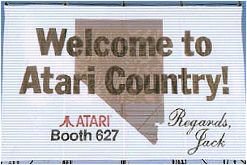
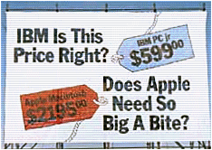

|
It has come and gone, but I
didn't want the year 2000 passing by without some
formal tribute to the Atari ST range. From its debut
in January 1985 at the Comdex show in Las Vegas, Nevada,
the Atari ST was a stunning new computer system at the
time.
After
only owning Atari since the 2nd of July 1984, Jack Tramiel and his team
needed a next generation computer to catapult the beleaguered Atari into
the good times again. legal wrangling with his former company
Commodore, and the loss of Amiga Technologies to them as well had
certainly made the new Atari's task to design, build, test and
manufacture working models of a totally new computer system a tough challenge.
The
main architect of the original Atari ST was Vice President of research
and development, Shiraz Shivji. Under his leadership, a team at
Atari designed a new computer system. Design work was started in
July 1984 and completed (including all custom I.C's) in December of the
same year. Most of the initial bug testing was complete and
Atari's team based at Sunnyvale and at the Digital Research HQ were
working flat out to ensure a fully working OS was fine tuned for the
forthcoming Comdex show in January 1985, the maiden public flight of the
new Atari computer.



Pictures
above: shows Billboards in Vegas on route to Comdex, 1985.
Courtesy of Hans-Martin Krober.
The
show was a success. The Atari ST was launched with much praise,
and it became one of the most popular computers in Germany during the
mid-late eighties, something a lot of American PC manufacturers have
still failed to do. In fact, Europe was Atari's most
successful market, in contrast to the U.S. market with its tougher
competition, was always a strain on Atari, its dealers and ultimately
its end users.
But
the ST did change the face of computing, although it gets little
recognition for that today. Atari did a lot of things right, and
had its fair share of "challenges" along the way,
including a global recession, competition especially from MS Windows,
FCC problems, a late entry back into the video game business and a lack
of strong advertising and support to its dealer network.
The
Atari ST was particularly strong in the music industry, with the
inclusion of MIDI ports being one of the clever design aspects of the
machine. Atari also paved a niche into the DTP market with its low cost
laser printer and high end DTP software. Unfortunately, these were
never sustained markets for varying reasons and the ST became a
"niche computer" and a popular games machine in Europe.
The
ST also suffered from a lack of continued development, the Mega ST which
followed the standard "all-in-one" product, was nothing more
than a redesigned box with the famous "blitter" graphics chip and a
separate keyboard. The STE (Enhanced) that followed
2 years later was a minor upgrade that increased the
colour palette, reduced chip count and included stereo
sound, among the more noticeable but lacklustre enhancements.
When
the MegaSTE was released in 1990, it was another step forward for the
range, introducing a new case design "borrowed" from its
bigger brother, the Atari TT, it had a 16Mhz 68000 and a built-in hard
drive. But this would be the last development of the ST, a
computer that served thousands in its Seven year life-span. (Estimated
world-wide installed base was approx. 1.6 Million).
The
ST brought true "Power without the price", but it didn't
deliver this to the business market. It was a popular
"home" computer, although accepted as a more respectable
machine in Germany. Ultimately, the PC would kill off these advanced
machines, along with the exciting "home" market. The
battle between Commodore, Atari and Apple would result in one winner in
the dedicated non-wintel market place, and although Apple had just
scraped through, it managed to survive. Atari left the computer
market in 1993 and tried its hand at video gaming one more time...
Although
its all over, we should be thankful that the ST was developed and
released - it changed computing in the 80's, and introduced new and
exciting possibilities for the consumer. The Atari ST is a piece
of computing history, just as ground-breaking as any Apple or IBM PC of
the era and one of the many historic products of Atari Corporation.
|